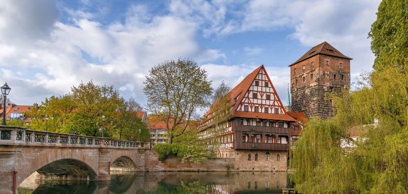

Overseas students looking for excellent education, thriving cultural encounters, and professional possibilities, are drawn to study in Germany, a highly sought-after study abroad destination. The country is well-regarded for it robust economy, and houses premier universities that offer a myriad of courses, of which many are instructed in English, enabling students who do not speak German to access it. With tuition fees comparatively lower than those in other sought-after study overseas destinations, along with ample scholarships and funding possibilities, Germany offers exceptional value for students looking for a top-notch education without wiping out their savings. In addition, the country’s strategic location in Europe provides quick access to travel opportunities, enabling students to visit neighboring nations and experience varied cultures. Moreover, Germany’s strong focus on innovation and research offers students useful hands-on experience and leads to several employment opportunities post graduation, in turn, making it an alluring destination for individuals seeking to launch their careers.
Comprising four semesters, a Masters in Computer Science in Germany generally takes 2 years to complete. Specialized coursework across several computer science domains, including software engineering, algorithms, data science, and artificial intelligence, are offered in this program, equipping students for jobs in business, academia, or research.
Why study a Masters in Computer Science in Germany?
Studying a Masters in Computer Science in Germany can be an excellent choice owing to the reasons mentioned as under:
- Top-notch instruction: With globally acknowledged universities, Germany offers outstanding education in computer science.
- Cheap or tuition-free education: Low-cost or tuition-free education is offered by a number of universities in Germany , thereby, making it economical for overseas students.
- Availability of state-of-the-art research: Leading the world in computer science research, Germany provides students with access to the most recent advancements within the discipline.
- Cultural exposure: Students studying in Germany are offered the opportunity to immerse themselves in a new culture and learn a new language.
- Robust labor market: The technology sector in Germany is strong offering an abundance of employment prospects for graduates in computer science.
- Internship possibilities: With strong linkages with the industry, students studying at universities in Germany are offered possibilities for internships and hands-on experience.
Best Masters in Computer Science specializations for students to pursue in Germany
Students wishing to pursue Masters in Computer Science in Germany can choose from among these specializations:
- Software Engineering
- Cybersecurity
- Robotics
- Distributed Systems
- Artificial Intelligence
- Bioinformatics
- Embedded Systems
- Computer Vision
- Human-Computer Interaction
- Data Science
Leading universities in Germany to pursue a Masters in Computer Science
Among the leading universities in Germany to pursue a Masters in Computer Science are:
- TU Berlin
- Ludwig Maximilian University of Munich (LMU)
- University of Freiburg
- University of Bonn
- Technical University of Munich (TUM)
- Humboldt University of Berlin
- University of Stuttgart
- RWTH Aachen University
- Heidelberg University
- Karlsruhe Institute of Technology (KIT)
How much does it cost to pursue a Masters in Computer Science in Germany?
Based on whether the university is a private or public university, the cost of pursuing a Masters in Computer Science in Germany can differ to a great extent. Public universities typically charge very low tuition fees, usually around €1,000 annually or even free for overseas students. On the other hand, tuition fees at private universities may be higher, usually between €10,000-€30,000 or more annually. Moreover, students need to take into account the costs of living, but depending on one’s location and way of life, these can also differ.
Eligibility Criteria to pursue a Masters in Computer Science in Germany
Pursuing a Masters in Computer Science in Germany requires students to fulfill the eligibility criteria mentioned below:
- The student needs to hold a Bachelor’s degree in Computer Science or an associated field
- He/she needs to fulfill the minimum Grade Point Average (GPA) (differs depending on the university)
- The student needs to prove his/her fluency in the German language if his/her program is in German or his/her fluency in English if the program is conducted in English
- He/she is required to submit GRE test scores (at times mandatory, based on the university)
- The student needs to submit a statement of purpose (SOP)
- Submission of recommendation letters
- Pertinent work experience may be required by certain universities
- International students are required to fulfill visa prerequisites
Job Opportunities post completing a Masters in Computer Science in Germany
After completing a Masters in Computer Science in Germany, students can choose from any of the jobs mentioned below:
- IT Consultant
- Network Administrator
- Project Manager
- Data Scientist
- Web Developer
- Machine Learning Engineer
- Cybersecurity Analyst
- Research Scientist
- Software Engineer
- Systems Analyst
FAQs
-
Are there any scholarship opportunities for overseas students studying in Germany?
Yes, a number of scholarships viz., the Erasmus Mundus scholarships, DAAD (German Academic Exchange Service) scholarships, and a variety of institutional scholarships granted by organizations and universities are available for international students in Germany.
-
Can international students work while studying in Germany?
Yes, international students studying in Germany are permitted to work part-time (for a maximum of 20 hours per week) during your studies and full-time during semester breaks. In doing so, students can earn extra income as well as gain pertinent work experience.
For further assistance or queries students can contact us, Edwise International, and avail of our wide range of services for students on destinations like Universities in Australia, study in Australia, study in UK, study in USA, study in Canada, study in Ireland, study in New-Zealand, study in Singapore and many other countries.